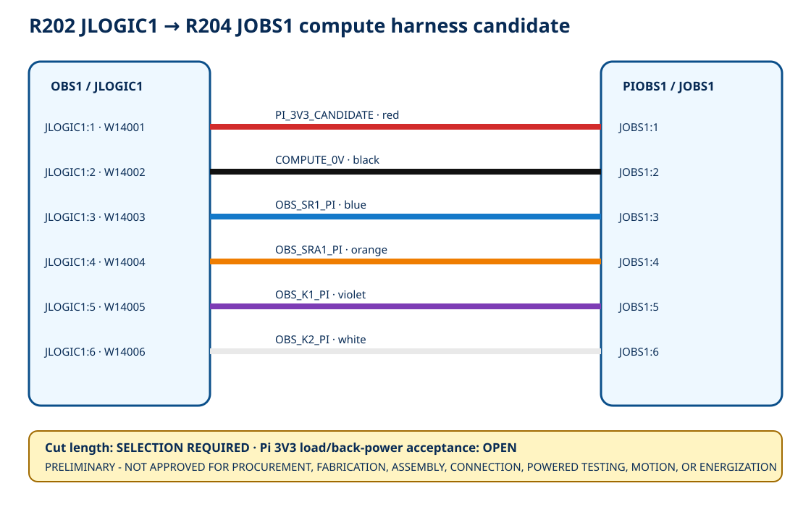

6exact wire/color candidates
322.5 mmrounded geometry screen—not cut length
≤5.0 mAsource load screen—not Pi approval
13open acceptance rows
Interactive wiring view

Conductor schedule
| Wire Number | Net | From | To | Wire Candidate | Color | Cut Length Mm | State |
|---|---|---|---|---|---|---|---|
| W14001 | PI_3V3_CANDIDATE | JLOGIC1:1 | JOBS1:1 | Belden 3051 RD005 | red | SELECTION REQUIRED | CATALOG CANDIDATE - NOT CUT OR INSTALLED |
| W14002 | COMPUTE_0V | JLOGIC1:2 | JOBS1:2 | Belden 3051 BK005 | black | SELECTION REQUIRED | CATALOG CANDIDATE - NOT CUT OR INSTALLED |
| W14003 | OBS_SR1_PI | JLOGIC1:3 | JOBS1:3 | Belden 3051 BL005 | blue | SELECTION REQUIRED | CATALOG CANDIDATE - NOT CUT OR INSTALLED |
| W14004 | OBS_SRA1_PI | JLOGIC1:4 | JOBS1:4 | Belden 3051 OR005 | orange | SELECTION REQUIRED | CATALOG CANDIDATE - NOT CUT OR INSTALLED |
| W14005 | OBS_K1_PI | JLOGIC1:5 | JOBS1:5 | Belden 3051 VI005 | violet | SELECTION REQUIRED | CATALOG CANDIDATE - NOT CUT OR INSTALLED |
| W14006 | OBS_K2_PI | JLOGIC1:6 | JOBS1:6 | Belden 3051 WH005 | white | SELECTION REQUIRED | CATALOG CANDIDATE - NOT CUT OR INSTALLED |
Both-end process boundary
| End | Terminal | Wire Envelope | Candidate Preparation | Torque | Required Controls | State |
|---|---|---|---|---|---|---|
| R202 JLOGIC1 | MKDS 1/6-3,5 item 1751280 | flexible 0.14-1.5 mm2; ferrule 0.25-0.5 mm2 | direct strip 5 mm; support PCB terminal during connection | 0.22-0.25 N m | received identity/orientation; calibrated strip gage and torque driver; no nicked/escaped strands; insertion, pull and post-torque inspection | PROCESS QUALIFICATION OPEN |
| R204 JOBS1 | MKDS 1/6-3,5 item 1751280 | flexible 0.14-1.5 mm2; ferrule 0.25-0.5 mm2 | direct strip 5 mm; support PCB terminal during connection | 0.22-0.25 N m | received identity/orientation; calibrated strip gage and torque driver; no nicked/escaped strands; insertion, pull and post-torque inspection | PROCESS QUALIFICATION OPEN |
Open holds
| Hold Id | Topic | State |
|---|---|---|
| OCH-HOLD-001 | received R202/R204 terminal identity, orientation, soldering and damage inspection | OPEN - SELECTION/EVIDENCE REQUIRED |
| OCH-HOLD-002 | received Pi/case/cooler/bracket/R204 stack transform and exact harness endpoints | OPEN - SELECTION/EVIDENCE REQUIRED |
| OCH-HOLD-003 | measured physical route and exact cut length for W14001-W14006 | OPEN - SELECTION/EVIDENCE REQUIRED |
| OCH-HOLD-004 | service loop, termination allowance, tolerance, labels and strain relief | OPEN - SELECTION/EVIDENCE REQUIRED |
| OCH-HOLD-005 | usable WD2 area, existing occupancy, packing, cover fit and domain separation | OPEN - SELECTION/EVIDENCE REQUIRED |
| OCH-HOLD-006 | 15 mm stationary bend radius and transition support in the installed route | OPEN - SELECTION/EVIDENCE REQUIRED |
| OCH-HOLD-007 | qualified direct-strip process, calibrated strip gage and torque driver | OPEN - SELECTION/EVIDENCE REQUIRED |
| OCH-HOLD-008 | strand damage, exposed copper, insertion, torque, pull and post-torque records at both ends | OPEN - SELECTION/EVIDENCE REQUIRED |
| OCH-HOLD-009 | manufacturer DCR plus selected length voltage-drop/return-shift calculation | OPEN - SELECTION/EVIDENCE REQUIRED |
| OCH-HOLD-010 | Raspberry Pi 3V3 external-load, GPIO threshold, pull, startup and brownout acceptance | OPEN - SELECTION/EVIDENCE REQUIRED |
| OCH-HOLD-011 | open/short/cross-short/return-loss/source-loss and back-power fault evidence | OPEN - SELECTION/EVIDENCE REQUIRED |
| OCH-HOLD-012 | continuity, polarity, isolation, crosstalk, EMC, thermal and timing evidence | OPEN - SELECTION/EVIDENCE REQUIRED |
| OCH-HOLD-013 | qualified electrical/compute/panel review and separate written work authorization | OPEN - SELECTION/EVIDENCE REQUIRED |
Open load boundary · Download conductor schedule · Primary-source register